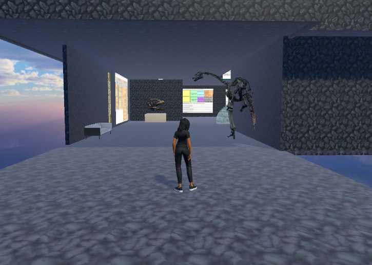
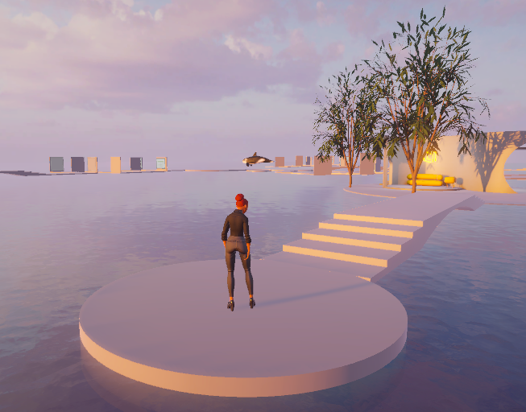
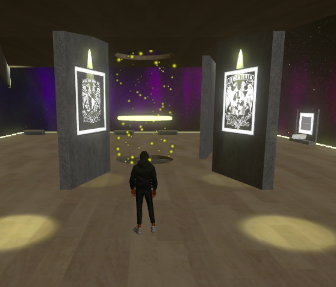

Aula virtual 1
Geología y Mineralogía
Espacio inmersivo dedicado al estudio de minerales, rocas y procesos geológicos. Incluye modelos 3D de minerales, infografías interactivas y recorridos por formaciones geológicas representativas.
Entrar al aula
Aula virtual 2
Geomorfología
Mundo virtual enfocado en las formas del relieve terrestre y los procesos que las originan. Incluye recorridos por la Península de Baja California Sur y animaciones de procesos erosivos y volcánicos.
Entrar al aula
Aula virtual 3
Ambientes Sedimentarios
Museo virtual (Museo_FI) dedicado a los distintos ambientes de depositación sedimentaria. Exhibe rocas, fósiles, texturas y estructuras sedimentarias en un entorno inmersivo de galería museográfica.
Entrar al aulaCómo acceder
Instrucciones de acceso
Los mundos virtuales están alojados en Spatial.io y son de acceso libre. Para la mejor experiencia se recomienda usar una computadora con navegador actualizado (Chrome o Edge). También pueden visitarse desde tabletas y teléfonos celulares. No se requiere crear una cuenta para explorar los espacios.